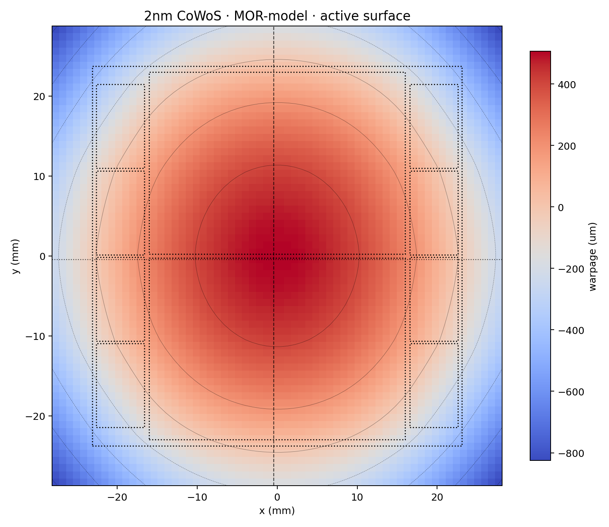
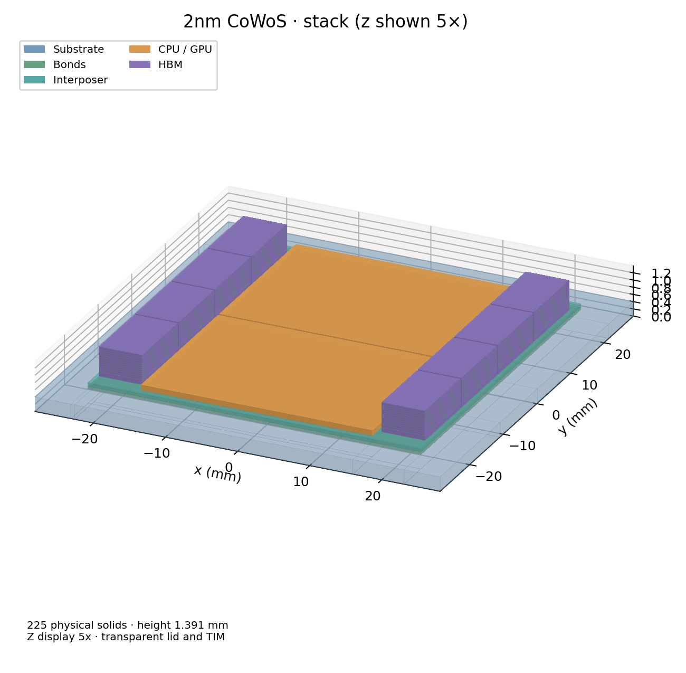
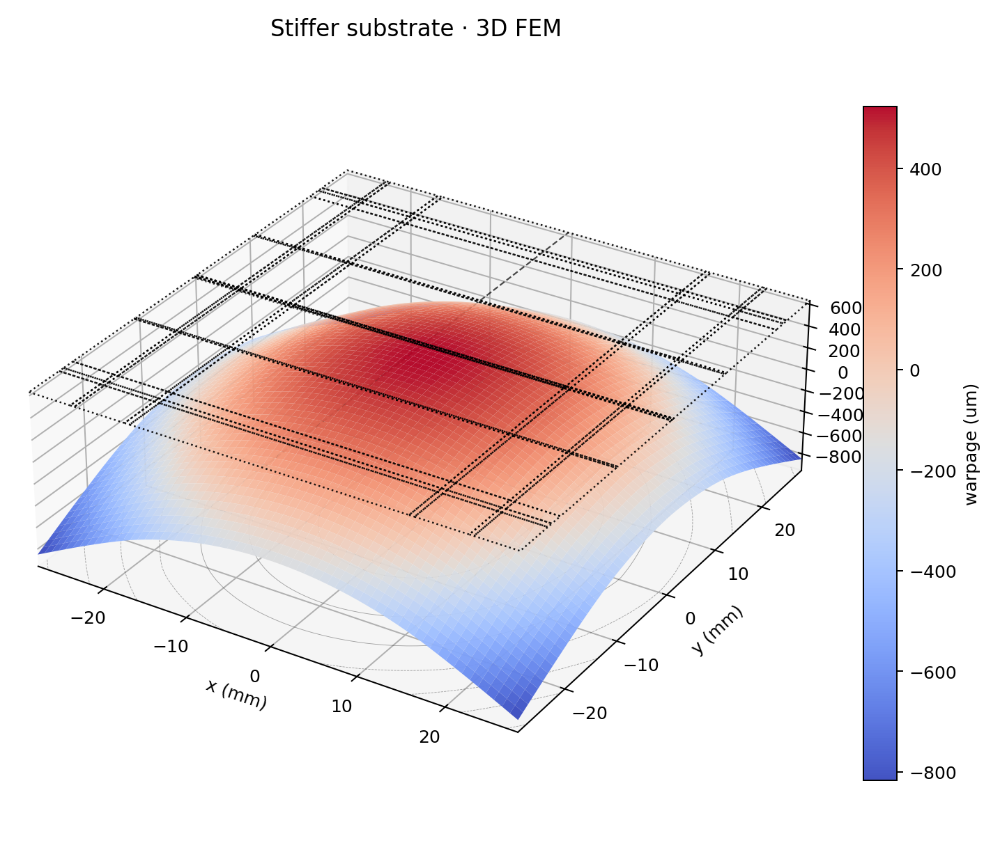
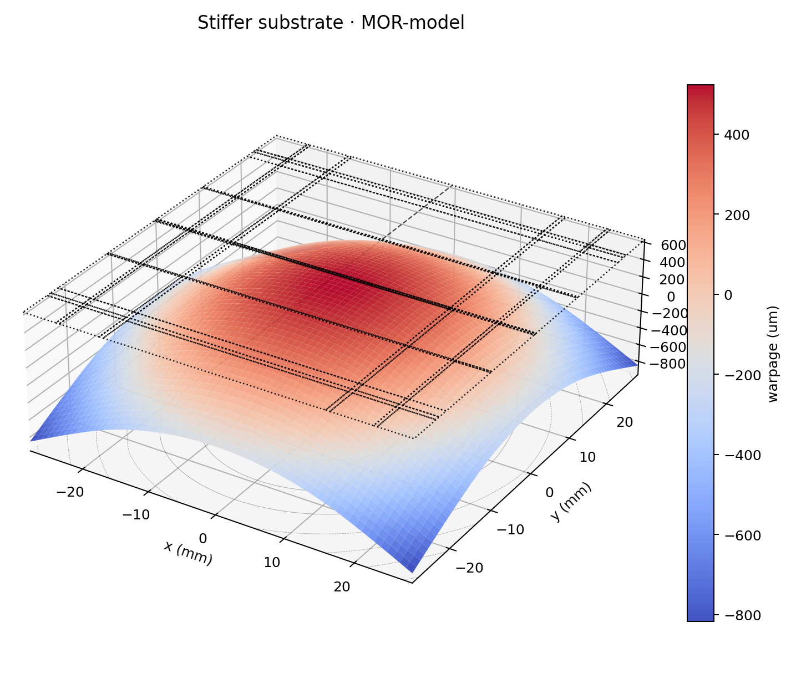
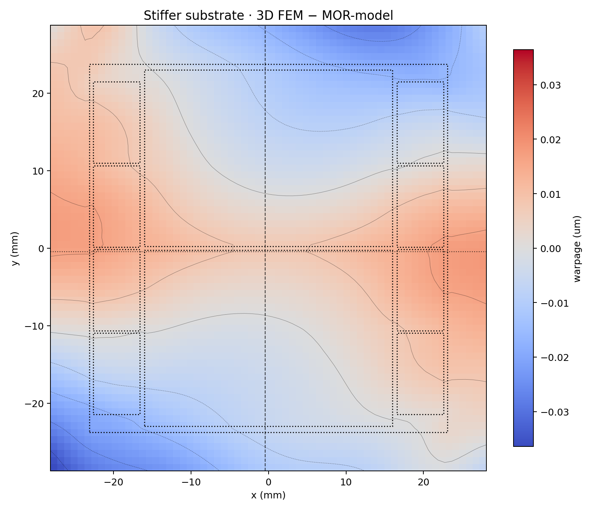

Localized means something precise here: the compact model is built once over a bounded box around a nominal design — by default ±10% on each material property — and inside that box every answer carries a rigorous error bound with it. It is a physics-based reduction of the same 3D formulation, not a black-box fit to data. On a what-if deliberately chosen outside the box (ABF substrate stiffened 24.0→28.8 GPa, a change that moves peak-to-peak warpage by +40.9 µm) it tracks the full 3D solve to within 0.036 µm while running in 51 µs — 798,000× faster. This paper reports the method agreement, the eight-point validation across the material design space, and the cost model.
The compact model is built over a bounded box around a nominal design — by default ±10% on each material property — and inside that box every answer carries a rigorous error bound with it. Ask for a point outside the box and it still answers, still reports its bound, and tells you that you have left the region it was built for. Change the floorplan and it refuses to load at all.

The WarpStack-MOR is a physics-based compact model built once per design from the same 3D formulation — not a black-box fit to data. Here the substrate is stiffened, a change that moves peak-to-peak warpage by +40.9 µm. The WarpStack-MOR resolves that shift to within 0.036 µm — in 51 µs rather than 40.6 s.




| Quantity | Full 3D solve | WarpStack-MOR |
|---|---|---|
| Peak-to-peak warpage | 1372.7 µm | 1372.6 µm |
| Time per design point | 40.6 s | 51 µs |
| Peak-to-peak difference | reference | 0.043 µm |
| Whole-map difference | — | 0.003% |
| Largest local difference | — | 0.036 µm |
WarpStack is in active development. Request a demo or a walkthrough on your own 2.5D/3D chiplet designs, and we'll get you set up.